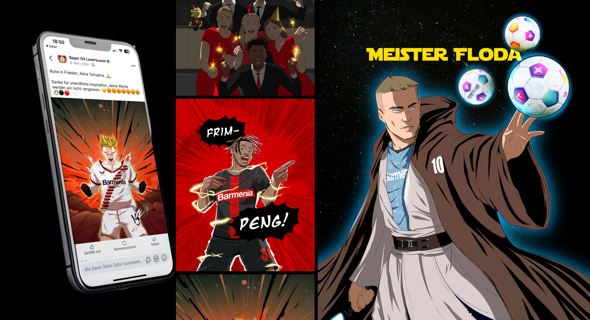
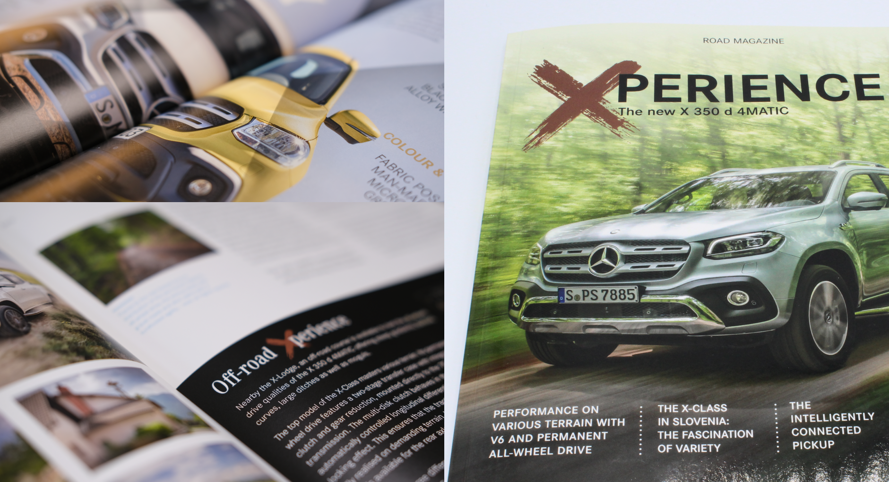
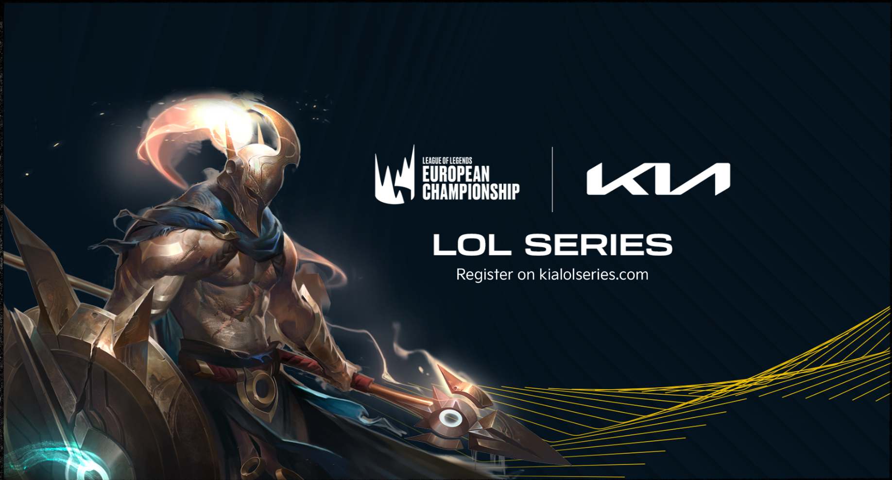
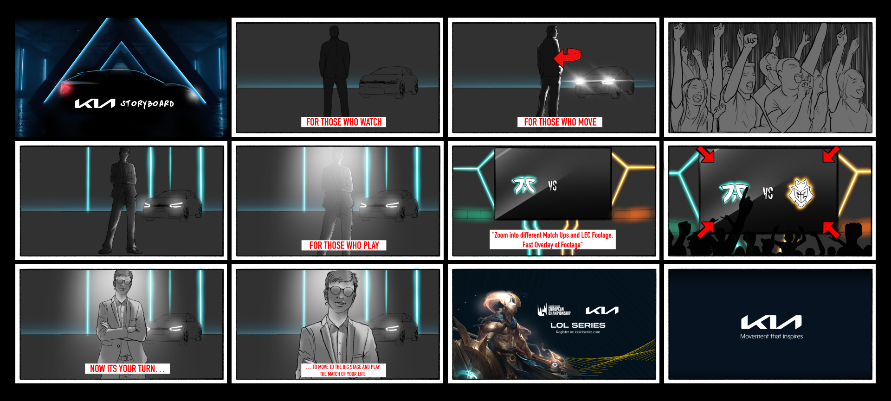

Generali
Magazine.
PITCH — NEUINTERPRETATION DES ALTEN. Wir gehörten zu den drei siegreichen Agenturen in einem Wettbewerbs-Pitch, mit der Aufgabe, den Wealth Building & Security Plan Stern komplett neu zu gestalten. Ich leitete das visuelle Design und das strukturelle Konzept, während alle Entwürfe gemeinsam im Team entwickelt wurden. Generali Deutschland AG ist Deutschlands zweitgrößter Erstversicherer mit rund 10 Millionen Kunden und Marken wie Generali Versicherung, CosmosDirekt und ADVOCARD.
PITCH — REINVENTING THE OLD. We were one of three winning agencies in a competitive pitch, tasked with redesigning the Wealth Building & Security Plan star. I led the visual design and structural concept, while all drafts were developed collaboratively. Generali Deutschland AG is Germany’s second-largest primary insurer, serving roughly 10 million customers with brands like Generali Versicherung, CosmosDirekt, and ADVOCARD.

Bayer 04 — Social Media.
Mein Illustrationsstil überzeugt durch frische Ideen, ausdrucksstarke Farben und eine unverwechselbare Handschrift. Im Sabbatjahr 2024 setzte ich diese Stärken in Projekten für Kunden wie Bayer 04 Leverkusen ein. Meine Arbeiten brachten frischen Wind in Social-Media-Kanäle und steigerten die Interaktionsraten durch emotionale und klar kommunizierte Visuals.
My illustration style stands out with fresh ideas, expressive colors, and a distinctive signature. During my sabbatical in 2024, I applied these strengths to projects for clients like Bayer 04 Leverkusen. My work refreshed social media channels and boosted engagement with visuals that evoke emotion and clearly communicate brand messages.

ROAD Magazine.
Die exklusive Presseveranstaltung von Mercedes-Benz Vans in Ljubljana stellte den X 350 d 4MATIC als leistungsstarken V6-Pickup in den Mittelpunkt. Inspiriert vom Editorial-Stil des ROAD Magazine wurden die visuellen Inhalte modern und outdoor-orientiert inszeniert. Storytelling verband urbanen Lifestyle mit Offroad-Kompetenz, mit klaren Linien, Naturkulissen und reduzierter Typografie.
Mercedes-Benz Vans’ press event in Ljubljana showcased the X 350 d 4MATIC as a powerful V6 pickup. Inspired by ROAD Magazine’s editorial style, the visuals positioned the vehicle in a modern, outdoor-oriented context. Storytelling combined urban lifestyle with offroad capability, using clean lines, natural backdrops, and minimal typography.

KIA LoL Series — Storyboard.
„League of Legends“ (LoL) ist einer der beliebtesten Multiplayer-Games, und die LEC gilt als eine der wichtigsten E-Sport-Ligen weltweit. Hauptpartner Kia hat die „Kia LoL Series“ gestartet, ein Community-Turnier, dessen Finale im Berliner Riot-Games-Studio stattfand. Am 01. Oktober traten die beiden besten Teams live auf der LEC-Bühne gegeneinander an. Storyboard für das Announcement-Intro.
League of Legends (LoL) was one of the most popular multiplayer games, and the LEC was considered one of the most important esports leagues worldwide. Main partner Kia launched the “Kia LoL Series”, a community tournament with finals at the Riot Games studio in Berlin. On October 1st, the two best teams competed live on the LEC stage. Storyboard for the announcement intro.

